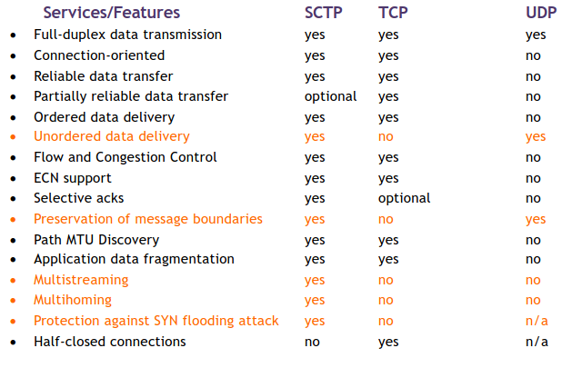

Protocolos de Transporte - Desenvolvimentos Recentes
Stream Control Transmission Protocol (SCTP)
Motivação
- Fiabilidade, mas sem ordenação;
- Fiabilidade, mas não é orientado à stream;
- Mais escalabilidade e redundância (multihoming);
- Mais robusto (contra ataques).
Basicamente, quando comparado ao TCP, tem como objetivo melhorar o desempenho e robustez do transporte.
Introdução
- Tal como o TCP, providencia transferências fiáveis, em full-duplex e unicast;
- Ao contrário do TCP e do UDP, oferece novas opções de entrega que são particularmente desejáveis para sinalização de telefonia e aplicações multimédia.
Objetivos
- Mantém as retransmissões fiáveis do TCP, congestão de controlo e orientadas à conexão, mais:
- framing - preserva as barreiras das mensagens;
- 4-way handshake - para reduzir a vulnerabilidade a ataques DoS;
- multistreaming - até 64 mil streams independentes ordenadas;
- multihoming - ao invés de um endereço IP por endpoint, utiliza um conjunto de endereços IP por endpoint.
- O SCTP utiliza o multihoming para redundância e não para balanceamento de carga.
Associação
- A combinação entre uma porta SCTP e um endereço IP define o "SCTP Transport Address";
- Um endpoint SCTP:
- é o fim lógica de um protocolo de transporte SCTP - uma party de comunicação;
- Pode ter mais do que um endereço IP, mas terá sempre uma única porta;
endpoint = [10.1.4.2, 10.1.5.3:80].
- Em SCTP, a relação de comunicação entre dois endpoints é denominada associação.
association = {[10.1.61.11:2223], [10.1.4.2, 10.1.5.3:80]}.
Framing
- Mantém os limites de uma mensagem, uma mensagem aplicacional é mantida como um mais chunks de dados;
- O objetivo é melhorar o desempenho removendo o blocking nos dados recebidos, quer seja devido ao delay ou devido à perda.
- Separação da entrega fiável e ordenada;
- Permitir a entrega não ordenada elimina o delay head-of-line;
- As aplicações podem querer unidades de dados lógicas (chunks);
- Ver os dados como uma byte stream é ineficiente;
- Preserva o Application Level Framing;
- Cada envio/leitura é um chunk (isto é, uma unidade de dados da aplicação).

Packets
- Cabeçalho comum com três funções básicas:
- Portas de fonte e destino, usadas em conjunto com os endereços IP e outra informação de estado para identificar a associação (conexão);
- Etiqueta de verificação aleatória e negociada no
init; - Checksum: CRC32 no packet SCTP total.
- Seguida por um o mais chunks;
- Chunks são blocos de construção concatenados contendo dados de controlo ou de informação;
- O cabeçalho de um chunk identifica o seu tamanho, ou seu tipo e qualquer flag especial;
- Chunks de controlo transferem informação necessária para a funcionalidade de associação e chunks de dados carregam a camada de dados da aplicação;
- O RFC atual especifica 14 chunks de controlo diferentes para o estabelecimento de associação, terminação, ACK, recuperação de falhas no destino, ECN e reporting de erros.
4-way handshake


Multistreaming SCTP
- O TCP providencia transporte para uma stream de dados singular;
- O SCTP permite múltiplas streams independentes por associação.

- Separação lógica dos dados numa assoicação;
- Desenhada para prevenir o head-of-line blocking;
- Pode ser usada para entregar múltiplos objetos dentro da mesma associação.
Multihoming SCTP

- É capaz de gerir múltiplos cenários com múltiplos endereços IP de fonte e destino (interfaces com e sem cabo, múltiplos ISPs, etc...)

-
Os hosts escolhem 1 das 4 possíveis conexões TCP:
{(A1, B1), (A1, B2), (A2, B1), (A2, B2)};
-
Hosts usam 1 associação sctp:
({A1, A2}, {B1, B2});- Destino primário selecionável;
- Envia novos dados para o destino primário;
- Monitoriza o estado do caminho e o seu alcance (heartbeats).
-
Conexão TCP \( \Leftrightarrow \) Associação SCTP
- 2 endereços IP, 2 números de portas \( \Leftrightarrow \) 2 conjuntos de endereços IP, 2 números de portas;
- Um flow comum e um mecanismos de congestão de controlo é mantido de forma a reduzir o overhead;
-
Objetivo: robustez
- Automaticamente, troca os endereços IP dos hosts até falhar;
- Elimite o efeito de longos períodos de tempo para a reconvergência do routing.
-
TCP: não garante que a mensagens permaneçam "vivas" quando a conexão está idle;
-
SCTP: monitoriza o alcance de cada destino através de
ACKsde:- Chunks de dados;
- Chunks de heartbeat;
Comparado a Outros Protocolos

QUIC
Motivação
- Necessidade de providenciar uma entrega rápida e rendering ao nível da aplicação;
- Pretende resolver resolver os problemas do TCP tendo uma motivação semelhante ao SCTP, permitindo:
- Remoção do HOL blocking;
- Multiplexando diferentes streams;
- Aumentando a segurança.

Princípios
- Providencia aplicação com streams de flow controlado para comunicação estruturada, com um estabelecimento de conexão com baixa latência e migração do caminho rede;
- Inclui medidas de segurança que garantem a confidencialidade, a integridade e a disponibilidade baseada no TLS;
- Corre em cima do TLS/UDP, implementando o controlo de congestão;
- É um protocolo orietando à conexão que cria uma interação com estado entre o cliente e o servidor.
Operação
- O handshaking combina a negociação entre parâmetros de transporte e criptográficos (com baixas preocupações RTT);
- Os endpoints comunicam trocando packets QUIC;
- Os packets contêm frames que carregam informação de controlo e dados da aplicação entre endpoints;
- Protocolos da aplicação enviam dados através de uma conexão QUIC via streams que são sequências ordenadas de bytes;
- As streams podem ser bi-direcionais ou uni-direcionais (apenas um endpoint pode enviar dados);
- O controlo de flow baseia-se num esquema baseado em créditos para limitar a crianção de streams e limitar a quantidade de dados que podem ser enviados;
- Providencia o feedback necessário para implementar uma entrega fiável e congestão de controlo;
- Migração de caminhos, as conexões não estão estritamente presas a um único caminho na rede. O cliente pode migrar para um novo caminho, se disponível (precisa de probing e de path validation).